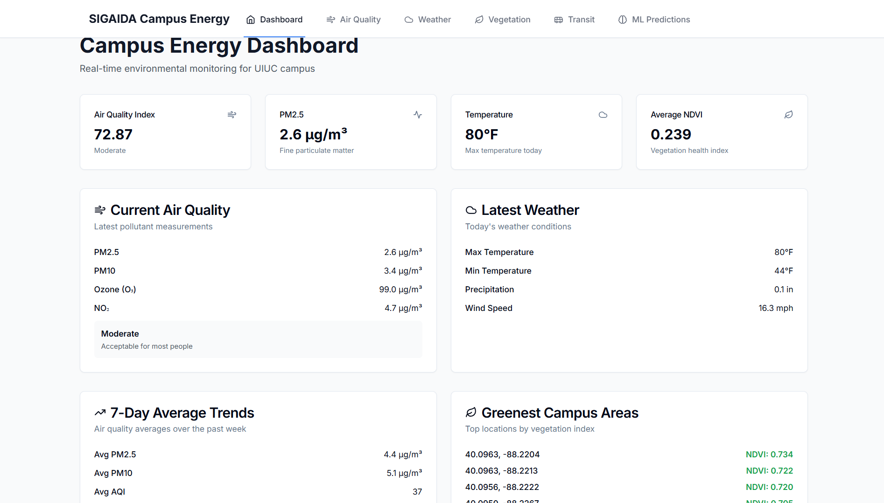
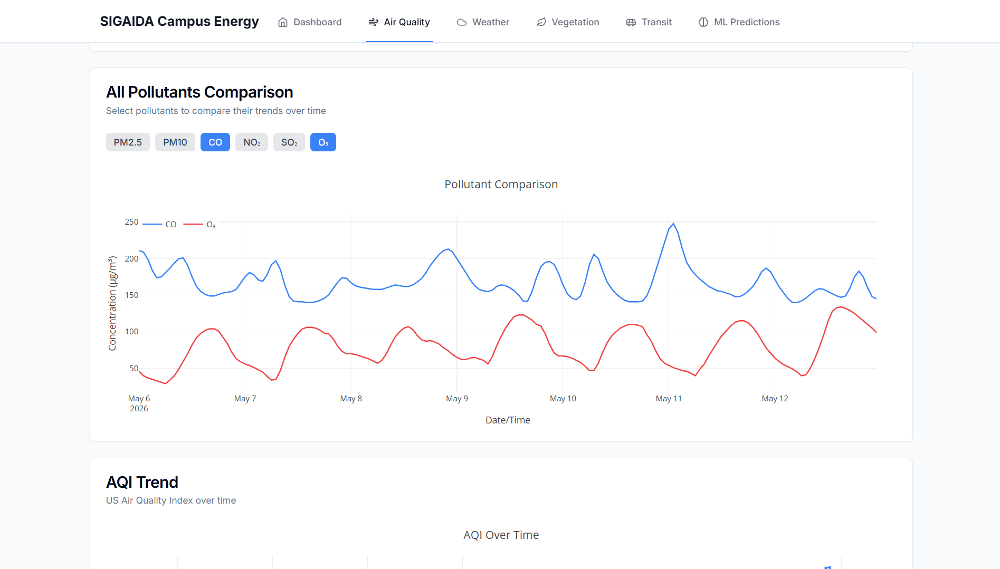
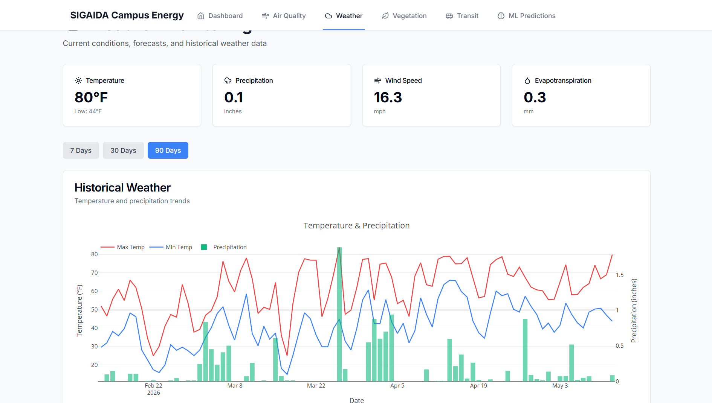
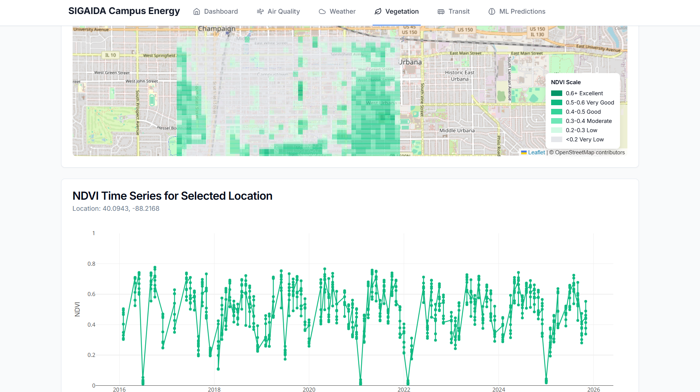
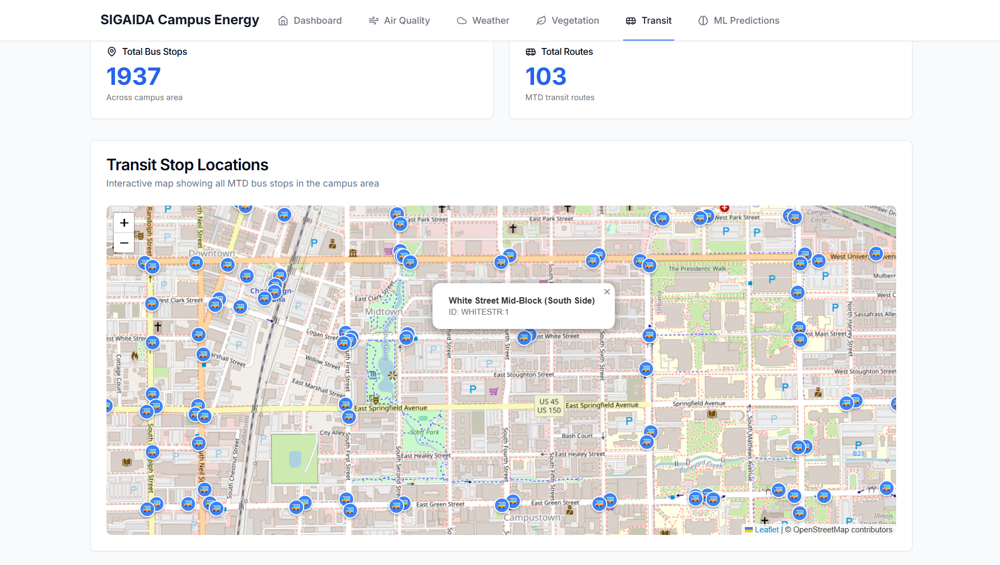
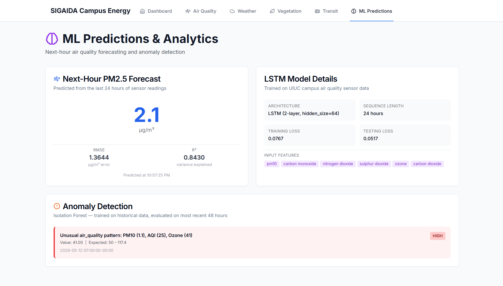

Full-stack environmental monitoring platform for the UIUC campus — integrating real-time air quality, weather forecasting, satellite NDVI vegetation analysis, and transit data, with LSTM-based air quality predictions.
Originally developed as part of a team at UIUC's ACM SIGAIDA (Special Interest Group for AI and Data Analytics), with primary responsibility for data collection and database management. After the project's lifecycle ended, the repo was forked and individually polished by integrating ML models developed by another team member, replacing placeholder content, and improving the overall UI.
Build a comprehensive environmental monitoring platform for the UIUC campus, unifying air quality, weather, satellite vegetation data, and transit into a single dashboard, with machine learning anomaly detection and forecasting layered on top.
A full-stack data science project demonstrating the complete pipeline from raw API data to ML-powered insights. Covers real-time AQI for 6 pollutants, 16-day hourly weather forecasting, satellite NDVI at 100m resolution spanning 2016–2025, and live MTD bus stop visualization.





